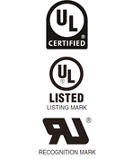
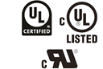
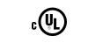
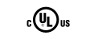
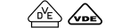
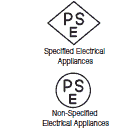

Building Automation
Industrial Automation
Power Automation & Safety


Bangladesh Distributor
Outline of Major Standards
Related Contents
International Standards
International standards consist of the IEC standards related to electricity and the ISO standards related to other areas (e.g., machines and management.)
IEC (International Electrotechnical Commission)
The IEC is a standardization commission founded in 1906 to promote unification and coordination of international standards relating to electricity. It is headquartered in Geneva, Switzerland.
Based on reports from member nations on the latest science technologies in those nations, IEC standards are issued as technological standards relating to electricity. Established international safety standards provided by various countries and accepted worldwide are based on IEC standards.
The IEC standards committees includes the CISPR (International Special Committee on Radio Interference) that makes standards for EMC (Electromagnetic Compatibility).
To simplify certification procedures for electrical devices and promote smooth international trade, there is an international scheme called CB Scheme (Certification Body Scheme), which is authorized by IEC standards. Based on the CB Scheme, safety tests on electrical devices are conducted and certificates are issued if the devices are proved to meet IEC standards.
ISO (International Organization for Standardization)
ISO is a standardization organization that started official activities in 1947 to promote international standards in all areas (e.g., machines and management) except for electricity, which is covered by the IEC, by issuing ISO standards. It is headquartered in Geneva, Switzerland.
North America
UL Standards (Underwriters Laboratories INC.)

A nonprofit organization established in 1894 by the American association of fire insurance companies. Underwriters Laboratories (abbreviated to UL hereafter) conducts certification testing on all kinds of electrical products. In many U.S. cities and states, UL certification is legally required on all electrical items sold. To obtain UL certification on an electrical product, all major internal components also require UL certification. UL offers two classifications of certification, the listing mark and the recognition mark.
A Listing Mark constitutes the entire certification of a product. A listed product displays the top or middle mark shown on the left. (From 2013, the UL Listing Mark shown in the middle on the left was changed to the Enhanced UL Mark shown at the top left with a new design and name. The use of either mark will be recognized for a period of ten years.)
The Recognition Mark applies to the components used in a product, and therefore constitutes a more conditional approval of a product. Recognized products display the Recognition Mark shown at the bottom. Use of the Recognition Mark is required only for specified parts (such as basic switches).
From 2013, the UL Badge shown on the left is displayed in catalogs, in instruction manuals, on packages, and elsewhere for listed products. (For a period of 10 years, display of either the UL Listing Mark or the UL Badge is recognized.)

Since October 1992, UL has been recognized as a CO (council organization) and TO (test organization) by the SCC (Standard Council of Canada). This authorizes UL to conduct safety tests and certify products conforming to Canadian standards. The above marks are UL marks for products certifying that the products meet Canadian standards.
The designs of the listing marks and recognition marks have been revised as shown below. These marks have been effective since January 1998. The previous marks are valid until November 2007.
| Marks for US | Marks for Canada | Marks for US and Canada | |
|---|---|---|---|
| Previous mark |  |  | |
| New mark |
| Marks for US | Marks for Canada | Marks for US and Canada | |
|---|---|---|---|
| Previous mark | |||
| New mark |
Standards (Canadian Standards Association)
This association descended from a nonprofit, non-government standardization organization established in 1919. In addition to industrial standardization, the association now carries out safety testing on electrical products.
Standard development: The Canadian Standards Association
Product testing and certification: CSA International
This process is known as "certification," and consequently, CSA-certified equipment displays the mark shown below.
Europe
EN (European Norm) Standards
Of the EN standards related to electricity, standards beginning with "EN6" are based on IEC standards and those beginning with "EN55" are based on IEC-CISPR standards. Standards beginning with "EN5" are unique EU standards that do not exist in the IEC standards.
The following marks of recognition are used by the Certification Bodies in European countries in accordance with EN standards.
Germany

- VDE (Verband Deutscher Electroechnischer e.V.)
- TÜV (Technischer Überwachungs Verein e.V.) Rheinland
- TÜV product services
The Netherlands
- KEMA (Keuring van Electrotechnische Materialen Nederland B. V.)
Switzerland
- SEV (Schweizerischer Electrotechnischer Verein)
EU (European Union) Directives
In the EU (European Union), EU Directives are announced to instruct the creation of laws in the EU member countries. A product can display the CE Marking only when it conforms to all of the directives applicable to it, such as the New Approach Directives, which cover the Machinery Directive, Low Voltage Directive, and the EMC Directive. As a rule, EN standards announced as Harmonized Standards in the Official Journal of the European Union are used to evaluate compliance with the Directives.
China
CCC (China Compulsory Certification) Mark
As a result of China joining the WTO (World Trade Organization) in 2001, the previous Safety License System for Import Commodities and the Compulsory Supervision System for Product Safety Certification were combined to form the CCC. The change was announced on 3 December 2001 and implemented from 1 May 2002. Starting 1 August 2003, any products that have not received the CCC Mark are prohibited from import to or sale in China.
Products Subject to CCC Mark: 22 product sections consisting of 157 product categories as of December 11, 2012
Applicable Standards: National Standards (GB: Guojia Biaozhun) (Standards related to electricity were based on IEC standards.)
CCC Mark: Display of the CCC Mark is legally required.
Korea
KOSHA (Korea Occupational Safety and Health Agency) S Mark Safety Certification System
The KOSHA S Mark Safety Certification System is based on Article 34-2 of Korea's Industrial Safety and Health Law. The purpose of the system is to improve safety and quality by awarding the S mark for safety certification to products that have been objectively recognized as safe. This process is performed by comprehensively inspecting the safety and reliability of products that are used in industry as well as the manufacturer's quality control capabilities.
The S mark for safety certification is a voluntary certification system that was established by the Korean Occupational Safety and Health Agency in November 1997 with the purpose of reducing occupational accidents. The certification mark is issued by KOSHA to products that it inspects and determines to meet the criteria.
Korea Radio Waves Act
The Korea Radio Waves Act specifies restrictions for EMC,including for industrial devices. Certification by or registration with the Radio Research Agency (RRA) is legally required for all applicable products. Displaying the Korea Certification Mark is also legally required.
Shipping Standards
There are more than 20 classification societies worldwide that individually work to create regulations and certify compliance. The IACS (International Association of Classification Societies) works as an international body currently consisting of 10 member classification societies plus 2 associate classification societies. The IACS (International Association of Classification Societies) works as an international body and currently consisting of 12 member classification societies. The classification societies in the IACS certify and register 90% of the world's ships.
Classification certification has a close relationship to maritime insurance. Insurance underwriters will as a rule insure only ships that have been classified and refuse those without a certified classification. Therefore, automation devices used on ships must conform to classification standards of individual countries if so requested by the owner.
Regulation (EC) No. 391/2009 of the European Parliament and of the Council of 23 April 2009 on Common Rules and Standards for Ship Inspection and Survey Organizations Article 10, which went into effect in June 2009, requires the mutual recognition of certificates for maritime items issued by EU regulatory organizations (ROs).
As a result, from 2013, the mutual recognition between EU ROs applies to ships of non-EU countries, and they are studying implementation of mutual recognition between the twelve EU RO member classification societies is being implemented in stages. Applicants can select whether to apply for mutual recognition or individual recognition.
However, mutually recognized certificates that are issued by other EU ROs are not valid for Japanese ships and mutual recognition is not implemented.
Note: The EU ROs consist of the following 12 certification bodies that are approved by the EU: ABS, BV, CCS, DNV, GL, KR, LR, NK, RINA, RS, PRS (Poland), and RINAVE (Portugal).
IACS Member Classification Societies
- ABS: American Bureau of Shipping
- BV: Bureau Veritas (France's classification society)
- CCS: China Classification Society
- CRS: Croatian Register of Shipping
- DNV: Det Norske Veritas (Norway's classification society)
- GL: Germanischer Lloyd (Germany's classification society)
- KR: Korean Register of Shipping
- LR: Lloyd's Register of Shipping (Britain's classification society)
- NK: Nippon Kaiji Kyokai (Japan's classification society)
- PRS: Polish Register of Shipping
- RINA: Registro Italiano Navale (Italy's classification society)
- RS: Russian Maritime Register of Shipping
- * DNV and GL merged to form the new DNV GL classification society in September 2013.
Other Classification Societies
- CR: China Corporation Register of Shipping (Taiwan's classification society)
Japan
Electrical Appliance and Material Safety Law of Japan

Accompanying revisions to laws related to electrical appliances, the Electrical Appliance and Material Safety Law was switched to on 1 April 2001 and the previous Electrical Appliance and Material Control Law was abolished. New marks were also created for the Electrical Appliance and Material Safety Law.
As of July 5, 2013, the law covers 116 specified electrical appliances and materials and 341 non-specified electrical appliances and materials.
Article 2 of the Ordinance Concerning Technical Requirements for Electrical Appliances and Materials specifies technical requirements harmonized with IEC standards on April 1, 2002.